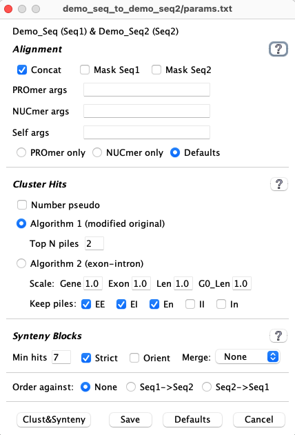
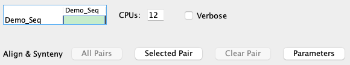

|
|
SyMAP System Guide |


|
|
|
|||
- For release v5.0.8, a document on trouble shooting MUMmer alignments failures has been added.
- For release v5.1.1, 3D has been retired, but may still be usable (see 3D).
- For release v5.2.0, FPC (fingerprinted contigs)8,9 is totally retired from SyMAP. To use FPC, see FPC.
Contents
- Overview and Publications
- Getting Started
- New project
- MySQL and Parameters
- Runtime and Memory
- Creating a New Project
- Sequence project
- Preparing the Sequences
- Annotation files - convert from NCBI or Ensembl
- Draft sequence
- Self alignments
- Directory structure
- Alignments and external programs
- Update SyMAP
- How SyMAP Works
- References
Overview and Publications
SyMAP is a system for computing, displaying, and analyzing syntenic alignments between medium-to-high divergent eukaryotic genomes. It does not work well for very similar genomes or bacterial genomes.Its features include the following (for a pictorial introduction, see the Tour):
|
Click an image to see the closeup.
|


Publications
The back-end processing of SyMAP, including the synteny block and anchor filtering algorithms, is described in the following two publications. A sketch of the algorithms is also provided here.
C. Soderlund, M. Bomhoff, and W. Nelson (2011)
SyMAP: A turnkey synteny system with application to plant genomes.
Nucleic Acids Research 39(10):e68.
C. Soderlund, W. Nelson, A. Shoemaker and A. Paterson (2006)
SyMAP: A System for Discovering and Viewing Syntenic Regions of FPC maps
Genome Research 16:1159-1168.
SyMAP is freely distributed software, however
if you use SyMAP results in published research, you must cite one
or both of these articles along with any external programs you used within SyMAP such as
MUMmer1,2
Getting Started | Go to top |
Steps for finding synteny
Follow the steps below to get started with SyMAP. Note that each SyMAP application window has a separate
| 1. | Use a Linux or Mac machine. | It needs to have Java v1.8 or later, and sufficient processing power. See system requirements. |
| 2. | Set up MySQL. | See MySQL. |
| 3. | Download SyMAP. | Installation is a simple unzip. See installation. |
| 4. | Run the demo. | Highly recommended. See running the demo. |
| 5. | Prepare sequences and annotation. | Sequences can be in one or many files and can be masked or unmasked. See preparing the sequences. Annotation format is gff3; see annotation files. |
| 6. | Load the files into SyMAP. | The SyMAP interface makes this easy; see creating a new project. |
| 7. | Compute alignments and synteny. | This is also easy through the SyMAP interface. See runtime and memory. |
| 8. | View results. | Detailed description of the user interface is in the User Guide. |
If you are working with FPC files, see the section on FPC.
System Requirements | Go to top |
| Centos Linux amd64 | MariaDB v10.4.12 | Java 1.8 |
| MacOS x86_64 (Catalina 10.15.4) | MySQL v8.0.17 | Java 17.0 |
| MacOS x86_64 (Maverick 10.9.5) | MySQL v5.6.21 | Java 1.8 |
The jar files have been compiled with Java 1.8, which is upward compatible.
For performing large alignments (e.g. 1Gb genomes or more) it is essential to have multiple CPUs, a 64-bit computer, and at least 5Gb of RAM for each CPU that you intend to use. Note that you can set the number of CPUs for SyMAP to use. See MUMmer for information on insufficient memory.
For viewing alignments, CPU and memory needs are typically negligible, unless you are performing queries on more than 4-5 genomes at once.
Installation
Installation simply consists of unzipping the download package, using the command> tar -xzvf symap_5.tar.gzThis can be done anywhere and it creates a directory called symap_5. You can move this directory later if desired. The contents are:
LICENSE README data/ ext/ java/ scripts/ symap symap.config viewSymapThe data/ directory contains a /seq sub-directory, which contains the demo files, and is the location for all input sequence files.
The ext/ directory contains the external programs MUMmer1,2 (sequence alignment) and MUSCLE7 (SyMAP Queries).
Running the Demo | Go to top |
- Change into the symap_5 directory.
- Edit symap.config and enter database
and host information (see MySQL), e.g. db_name=symapDemo.
- From the command line, type ./symap.
The first time you run SyMAP, it will create the database with information written to the terminal, e.g.
Creating database 'symapDemo' (jdbc:mysql://localhost/symapDemo?characterEncoding=utf8).
It will check your MySQL variables; if there are any "Suggested" changes, see Trouble Shoot MySQL. It will also check that the provided executables (e.g. MUMmer); if it shows any problems, see MUMmer Executables.
Synteny between two genome sequences | Go to top |
|
The Project Manager window opens showing the four demo projects provided with the SyMAP packages.
Check | 
|
|
A link If loading the "Demo-Seq" takes more than a few minutes, you may need to adjust the MySQL parameters, see TroubleShoot MySQL. When done, the Manager will look as shown in the image on the right. In the |

|
|
The When done, the table will have a checkbox, signifying that the synteny is available for viewing. Click the checked cell, which will enable the viewing buttons. |

|
|
Click "Summary" to view the v5 summary shown on the right; there may be slight differences in the #Anchors
because of different numbers of CPUs, MacOS vs Linux, etc (but the #Blocks come out the same).
To view the other interfaces, see Demo Results. |

|
Ordering the demo draft | Go to top |
|
Load the Demo-Draft project, following
the same steps used to load the previous two projects.
Under the Demo-Draft listing, you will see the parameter "Order against: demo_seq2". With this setting, the Demo-Draft contigs will be ordered using synteny to Demo-Seq2. |

|
|
Run the |

|
The ordering algorithm changes the order of the draft contigs in the database, but does not change the sequence files on disk. However, it writes the following files:
1. File of ordered contigs: It writes the order of the contigs along with whether they should be flipped to a file called /data/seq/Demo_seq2/ordering.csv.
2. Fasta files of ordered sequences: It creates sequence files from the ordered contigs that are flipped when appropriate, which are put into a new project with the suffix "_ordered", as shown in the image below. The chromosome names correspond to the order-against project (e.g. Demo_seq2), and the third chromosome is 'chr0' which contains all draft sequences that were not placed.
|
As shown in the image on the left, a new project has been added. Click Demo_Draft-ordered and
load it.
Running the |

|
Self alignment
The section on Self alignments discusses the Demo_Seq project.
New Project | Go to top |
MySQL and parameters
If your machine does not have MySQL or MariaDB, download and install it. For example, MySQL can be downloaded from dev.mysql.com. On a personal MacOS, simply download the '.dmg' file and following the instructions. On a work server, the system administrator may need to install it.The MySQL installation does not need to be on the machine where you will do the computations or view the results, as long as it is on an accessible network. Once the server is ready, fill out the database parameters in the symap.config file in the main SyMAP directory, as described below.
Important Note: The default settings of MySQL are poorly suited for large-scale data storage. You will want to adjust the parameters innodb_buffer_pool_size and innodb_flush_log_at_trx_commit as described in Trouble Shoot MySQL.
Database Parameters
Parameters for accessing the MySQL database should be set in the symap.config file in the main symap directory, as follows:
| Database Parameters | |
| db_name | Name of the MySQL database, which SyMAP will create when it first reads symap.config. It is standard to start the name with symap, e.g symapDemo. |
| db_server | The machine hosting the MySQL database, e.g. myserver.myschool.edu. If using your local machine, enter localhost. |
| db_adminuser | MySQL username of a user with sufficient privileges to create a database. Needed for creating and updating alignments. |
| db_adminpasswd | Password of the admin user. |
| db_clientuser | MySQL username of a user with read-only access. This is only necessary if you want a machine to run SyMAP as read-only. |
| db_clientpasswd | Password of the client user. |
Example symap.config.
db_name = symapDemo db_server = localhost db_adminuser = root db_adminpasswd = <password> db_clientuser = db_clientpasswd =To use an alternative file than symap.config, use the "-c" command line argument, e.g.
>./symap -c symapTmp.configThis is useful if you have multiple SyMAP databases.
Runtime and Memory
If SyMAP runs out of memory, see Trouble Shoot. If MUMmer runs out of memory, see MUMmer.The largest component of SyMAP execution time is in running MUMmer1,2. The time and memory for MUMmer all depends on the size of the genomes. For example, to align rice (12 chromosomes, 370Mb) to maize (10 chromosomes, 2Gb) required 1 hour and 3 minutes using 8 CPUs with 2.3Ghz speed. SyMAP used one CPU per maize chromosome to align the enter rice chromosome against each of the 10 maize chromosomes (i.e. used 10 CPUs).
The memory usage of MUMmer is typically 5G per CPU, however it can
be as high as 10G for very long or repetitive chromosomes. If MUMmer fails, it is often due
to insufficient memory, see the MUMmer document, which
explains how to determine the problem and ways around it.
Creating a New Project | Go to top |
|
To create a new project via the SyMAP interface, press the
|

|
| After saving the new project, it appears in the Projects list on the left, but it is still an empty shell. A directory will be made under the /data/seq, e.g. for the project added on the right, a directory will be created called /data/seq/foobar. Check its box and it will appear in the Summary section (right hand side). |

|
Parameters
|
For a project: Click the Parameters link to open the Parameters window shown in the image on the right.
On the Parameters window you will add the filenames for the sequences and annotations for the project,
as well as setting other parameters if desired. The Defaults: If the annotations are put in the sub-directory /annotations and the sequences are put in the subdirectory /sequence, it is not necessary to enter where the annotations and sequences exist, e.g. the default directories for the project foobar are as follows: /data/seq/foobar/annotations /data/seq/foobar/sequences | 
|
After setting the parameters, the project is ready to be loaded.
|
Alignment & Synteny parameters can be changed by selecting a project pair cell
followed by the These parameters generally do not need to be changed. The MUMmer program PROmer is the default program for sequence alignments for different genomes. The MUMmer program NUCmer is the default program for sequence self-alignments. |

 |
{kind=link}
Sequence project | Go to top |
Preparing the Sequences
The first decision with whole-genome sequence is whether to used repeat masked sequences.- Masking reduces alignment time and false-positive hits, but also runs a risk of concealing true hits due to inaccurate masking.
- SyMAP does not perform the repeat-masking so must be done with another program. However, you may obtain masked sequences from NCBI or Ensembl. NCBI provides soft-masked sequences where the scripts/ConvertNCBI script will convert it to hard-masked, and Ensembl provides both soft and hard-masked sequences (see Convert).
- Masking is not really necessary unless the genome is highly repetitive and those repeats are shared with other genomes being aligned. (Repeats cause particular trouble for self-alignments, see self-alignments in SyMAP).
- Occasionally, MUMmer fails aligning sequences (see MUMmer, which explains detection and solutions for known reasons for failure).
Another masking option which is available if you have gene annotation is to mask out everything but the annotated genes. You can enable the "mask_all_but_genes" option on the Project's Parameters window (shown above); turn it on before doing the alignments.
Note that sequence files should be in FASTA format and the name of a sequence is the string immediately following the ">", e.g.
>Chr3 Oryza Sativa GAATTCGAATTTGGGTAATGCTAATCAATACAGGTCAAAATCTATGTATTGAGTGGAATATACTGCAAAGTAATTACCTT CTTCCAAAGGAAAGCATTCCTTCTCTCTTGTGGGACTAGCAGATGATCTCGCAGCCAAGACGTGACCACCCAAGGCTCAC ...In this example, the sequence name is "Chr3" and the Chr3 sequence follows. The additional information "Oryza Sativa" is ignored.
Three things are important in naming sequences for SyMAP:
| A. | Sequence names can contain only letters, numbers, and underscores. |
| B. | The sequence names must exactly match those used in the annotation files (first column), or the annotations will not be loaded. |
| C. | Use a consistent prefix such as "Chr" for all sequences, followed by a short number; set 'grp_prefix' to the prefix in Project's Parameters window (shown above). If there is not a consistent prefix, you may leave the 'grp_prefix' blank; beware, this can have unintended results, so should be avoided if possible. |
Annotation files
Annotation files should be in gff3 format. The first column (seqid) must exactly match the sequence names in the fasta files. The third column (type) determines how SyMAP uses the entry. Types "gene", "exon", "centromere", and "gap" are recognized (other entries are ignored).The last column (attributes) contains "keyword=value" pairs describing the annotation.
- For genes, all attributes are saved in the database for viewing. You can set which attributes keywords to save; open the Project's Parameters window (shown above), look for parameter "annot_keywords".
- For exons, the "parent" keyword=value is saved for viewing.
NCBI files: A Java script (scripts/ConvertNCBI.class) has been provided that converts NCBI genome fasta files and gff annotation files into the format that works best with SyMAP. See the documentation for instructions.
Ensembl files: A Java script (scripts/ConvertEnsembl.class) has been provided that converts Ensembl genome fasta files and gff3 annotation files into the format that works best with SyMAP. See the documentation for instructions.
Draft sequence
If you are ordering the draft sequence against a closely related genome, see demo draft on how to proceed.If you are not ordering the draft sequence, and if the draft sequence is in too many sequence pieces, then (1) it takes a long time for the MUMmer comparisons, (2) the display is very cluttered, and (3) the blocks display does not work right. Limit the number of sequence pieces by setting min_size in the parameters window to only load the largest 150 sequences; there is a script called scripts/lenFasta.pl which will print out all the lengths; set the min_size to the 150th length. However, even 150 are a lot of blocks to view so you might want to start with the largest 50, merge them, then repeat.
Self Alignments
| To perform self-synteny, select the cell for the same project followed by
|  |
{kind=link}
By default, SyMAP uses the MUMmer 'nucmer' program for self-alignments. Each chromosomes is compared to every other chromosome including itself.
The Alignment & Synteny
Reasoning for using "--maxmatch": MUMmer ordinarily seeds its alignments with unique matches, which eliminates the possibility of off-diagonal seeds in the alignment of a chromosome to itself. To overcome this problem, individual chromosome self-alignments can use the MUMmer parameter -maxmatch, which removes the uniqueness requirement at the cost of greatly increased noise. The extra noise is then filtered to a large extent by the default SyMAP filters, but the diagonal squares of the dot plot will still have more noise visible than the off-diagonal.
The self-synteny of demo_seq shows two tiny blocks. A better demonstration is to download Arabidopsis thaliana from NCBI, convert it with the NCBI convert script, and run the self synteny. It took 16 minutes with one processor on a Mac Mini (2018) with 64GB main memory.
Directory structure | Go to top |
/data/seq/<project-name>/sequence /data/seq/<project-name>/annotationYou may do one of the following:
- Create these sub-directories under /data/seq and put your files there.
- Create these sub-directories under /data/seq and use soft links to point to the file locations,
e.g.
cd data/seq mkdir foobar cd foobar ln -s <location of directory of sequence files> sequence ln -s <location of directory of annotation files> annotation
- Use the project parameter window to enter the location of the sequences and optional annotation.
The file results of the alignment and synteny computations are is as follows:
/data/seq_results/<project-name1>-to-<project-name2>/align /data/seq_results/<project-name1>-to-<project-name2>/finalAfter the database is complete, these can be removed. However, sometimes SyMAP version updates require the project files to be reloaded and/or the synteny to be recomputed; if these files remain, the existing MUMmer files will be used, which saves a lot of time.
The log files are in the /logs directory, see
Running MUMmer for more details.
Alignments and external programs
Alignment executables
The alignment programs are provided in the symap/ext directory. There are executables for 64-bit Linux and 64-bit MacOS. SyMAP will select the correct directory for the machine you are running from, i.e. you do not need to do anything. Typically, these will work just fine; but if they do not, see MUMmer.MUMmer with SyMAP details
As of SyMAP v5.0.8, all MUMmer details have been put in a separate document, see MUMmer. This includes trouble shooting when MUMmer fails, and running MUMmer outside of SyMAP.
FPC project | Go to top |
Update SyMAP | Go to top |
- Put symap_5.tar.gz in a permanent location and untar it.
- Replace the /data and symap.config from your previous SyMAP location to this new location.
- This approach is safest as it acquires all changes (e.g. scripts) except for changes to the demo files.
- Put symap_5.tar.gz in a temporary location and untar it.
- Move symap_5/java/jar/symap.jar to the java/jar location of your permanent SyMAP.
- Check to see if there are any /scripts or /ext changes that need to also be copied over.
The following table shows what versions require action by the user.
| Release | Changed files1 | Action by User |
| v5.2.0 | symap, viewSymap, scripts/ConvertNCBI.* | |
| v5.1.9 to v5.1.7 | Only the symap.jar | See 3. If you have customized hit or gene colors, you will need to reset them. |
- Always get the new java/jar/symap.jar.
- The
Alignment&Synteny will use existing MUMmer files if they have not been removed. - To update to the latest Gene# assignment, it depends on what version you have:
v5.1.2 to v5.1.7 Execute ./symap -z, then select Reload Annotation ; the synteny algorithm does NOT need to be re-run.pre-v5.1.2 Delete database, Load Project and runAlignment&Synteny . The database does not have to be deleted, but its cleaner to do so.
How SyMAP Works | Go to top |
The sequences are written to disk*, with gene-masking if desired. In the alignment, one species is "query" and the other is "target". The query is the one with alphabetically the first name. The query sequences are written into one large file, while smaller target sequences are grouped into larger fasta files of size up to 60Mb, for more efficient processing in MUMmer. There is an option "Concat" that if unchecked, the query sequences are treated the same as the target; this is useful if the query and target are very large genomes.
Anchor Clustering:
The raw anchor set consists of the hits found by MUMmer.
These are first clustered into gene, or putative-gene hits. This is
done by clustering the hit regions on each sequence, and then defining new "gene"
hits which connect these regions. For example if three separate
exons hit between two genes, they will be clustered into one "gene"
hit having a combined score equal to the sum of the raw hit scores.
Clustering is by gene if the hits overlap annotation, otherwise, it uses
a max separation 1kb, creating "putative gene" regions.
Anchor Filtering:
The clustered "gene anchors" are now filtered using a version of
reciprocal-best filtering which is adapted for retaining duplications and
gene families. For each pair of genes (or putative genes) which is
connected by a clustered anchor, the retained anchors must be among
the top two anchors by score on both sides (top-2 allows for one
ancestral whole-genome duplication). An anchor will also be retained if its
score is at least 80% of that of the 2nd-best anchor on each side (this
allows for retention of gene family anchors). These filter parameters
may be adjusted through the Alignment & Synteny Parameters window.
Synteny Block Detection:
After the clustered anchors are loaded into the database, the synteny
synteny block algorithm runs. This algorithm looks for approximately-collinear
sequences of anchors, subject to several parameters including (A) Number
of anchors; (B) Collinearity of the anchors; (C) Amount of "noise" in the
surrounding region (to help reject false-positive chains). Criterion A can
be adjusted in the Alignment & Synteny Parameters window.
* Note that the sequences are re-written from the database to the disk for three reasons: (A) To allow re-grouping for efficiency; (B) To ensure elimination of invalid characters; (C) To mask non-gene regions, if desired. This also ensures that sequences names will match those in the database, and prevents problems caused by moving the source sequences on disk.
References | Go to top |
2 Marcais, G., A.L. Delcher, A.M. Phillippy, R. Coston, S.L. Salzberg, A. Zimin (2018). MUMmer4: A fast and versatile genome alignment system, PLoS computational biology, 14(1): e1005944.
4 Krzywinski, M., J. Schein, I. Birol, J. Connors, R. Gascoyne, D. Horsman, S. Jones, M. Marra (2009). Circos: An information aesthetic for comparative genomics. Genome Research doi:10.1101/gr.092759.109.
5 Soderlund, C., Nelson, W., Shoemaker, A., and Paterson, A.(2006). SyMAP: A system for discovering and viewing syntenic regions of FPC maps. Genome Res. 16:1159-1168.
6 Soderlund, C., Bomhoff, M., and Nelson, W. (2011). SyMAP: A turnkey synteny system with application to multiple large duplicated plant sequenced genomes. Nucleic Acids Res V39, issue 10, e68.
7 Edgar, R (2004). MUSCLE: a multiple sequence alignment method with reduced time and space complexity. BMC Bioinformatics 113.
8 Soderlund, C., S. Humphrey, A. Dunhum, and L. French (2000). Contigs built with fingerprints, markers and FPC V4.7. Genome Research 10:1772-1787.
9 Engler, F., J. Hatfield, W. Nelson, and C. Soderlund (2003). Locating sequence on FPC maps and selecting a minimal tiling path. Genome Research 13:2152:2163.